Aero Works Test Pilots
The hangar crews and test pilots who build and fly tomorrow's ships off the El Segundo runway.
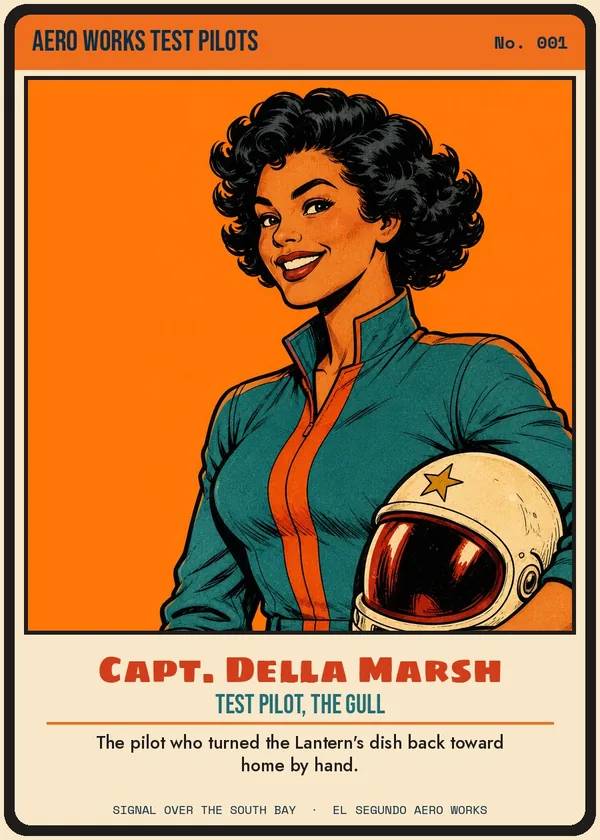
Della flies the Gull for the El Segundo Aero Works and treats every test card like a promise. When the Lantern went dark at 4:12 A.M., she had the rocket-plane awake in ninety seconds. She gives the order first and the joke second.
“Wake up the Gull.”
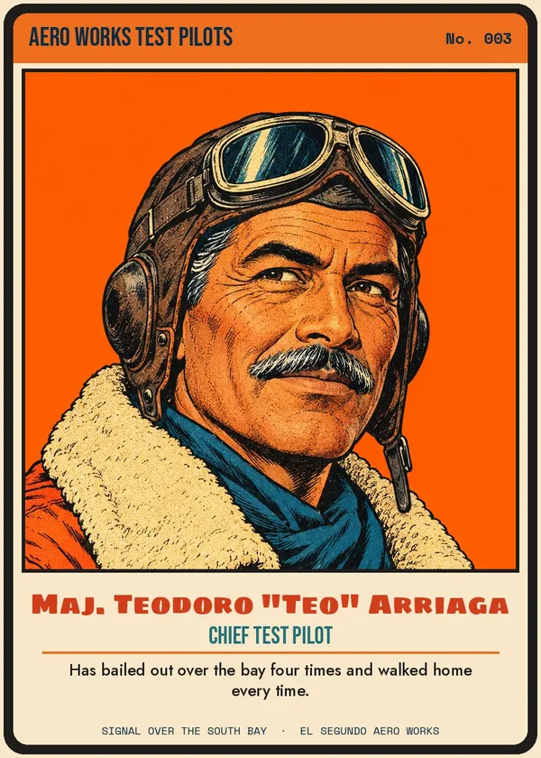
Teo flew the Aero Works' first rocket sled and still takes the riskiest test cards himself. He taught Della to land on a dead stick and reminds her of it weekly. He keeps a tide table in his flight-suit pocket, out of habit.
“Fly it like you'll have to explain it.”
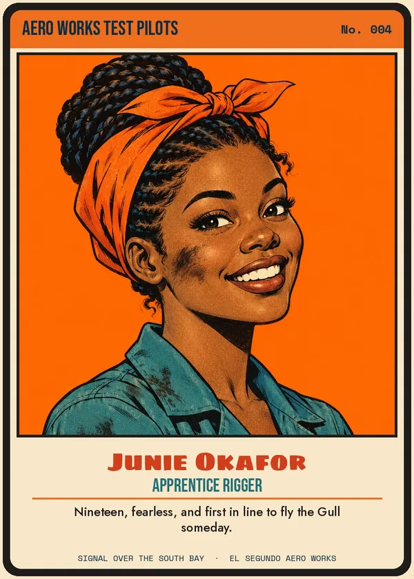
Junie rigs control cables on the night line and memorizes every flight manual she can borrow. She has already logged forty glider hours over Dockweiler. Della pretends not to notice her taking notes.
“Let me check the cables one more time.”
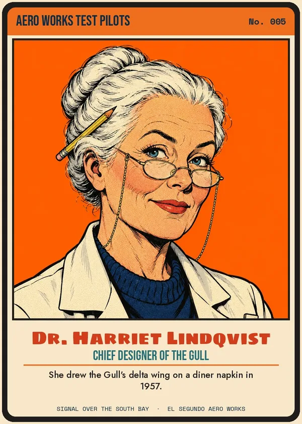
Harriet runs the Aero Works drafting room with a slide rule and a stopwatch. She designs for the pilot who has to come home. Her rule: if it can't be fixed with a wrench, redraw it.
“Redraw it.”
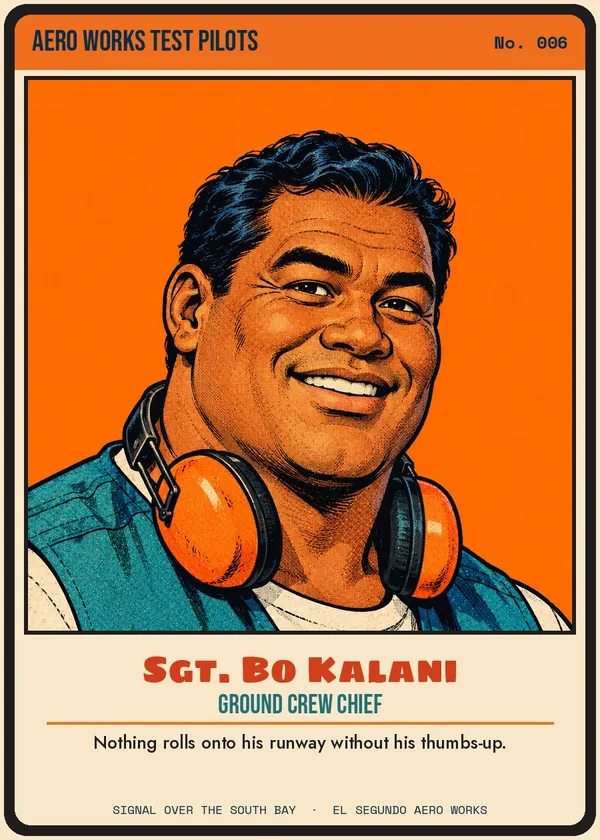
Bo has waved in every ship the Aero Works ever built, in fog, wind and sunset glare. He hums ukulele tunes over the tower frequency when the pilots get tense. His orange ear muffs are a local landmark.
“Chocks out, Captain.”
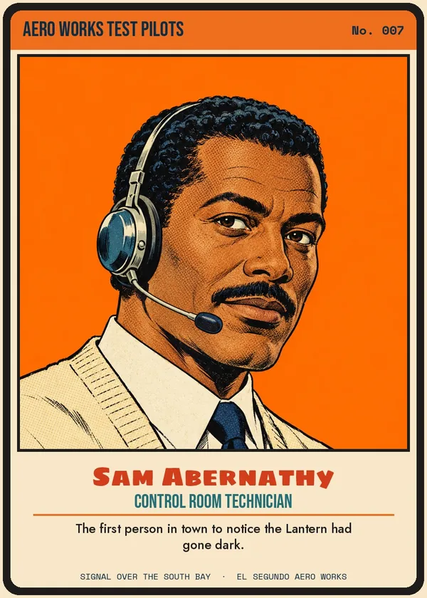
Sam watches the scopes on the graveyard shift and keeps a log in perfect block capitals. At 4:12 A.M. his oscilloscope went flat and he woke the whole Aero Works. He brings the donuts on launch days.
“No carrier, no voice, nothing.”
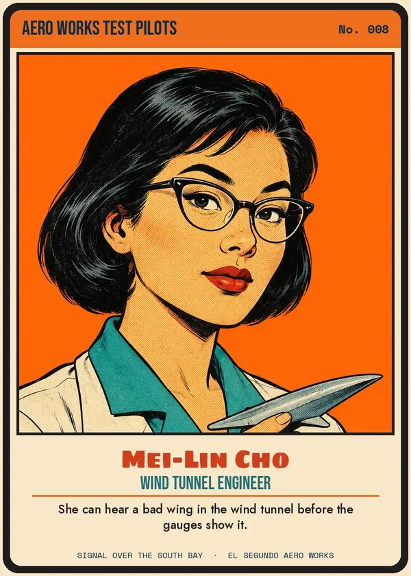
Mei-Lin runs the Aero Works wind tunnel and tests every model before it gets near a runway. She shaved two seconds off the Gull's climb with a single fin tweak. She surfs El Porto at lunch to study real turbulence.
“The air always tells the truth.”
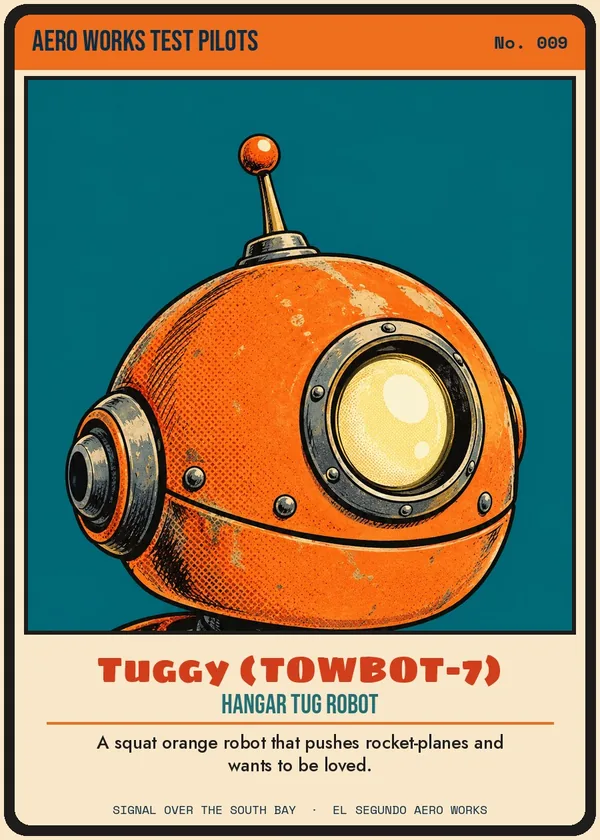
Tuggy tows the Gull from the hangar to the runway every morning and beeps a little tune when it gets there. It has a strong sense of duty and a weak sense of direction. The crew pats its dome for luck.
“Beep-boop-BEEP!”
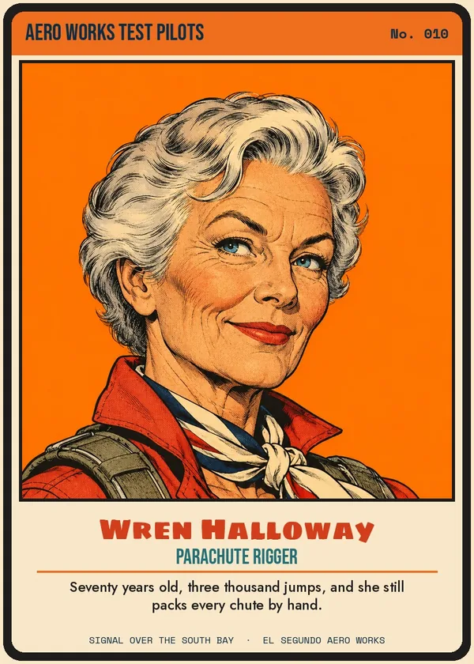
Wren folded parachutes for the first jet pilots and never retired. Every pilot at the Aero Works has her name stitched inside a canopy. She tells the story of each jump in exact numbers.
“Packed it myself, dear.”
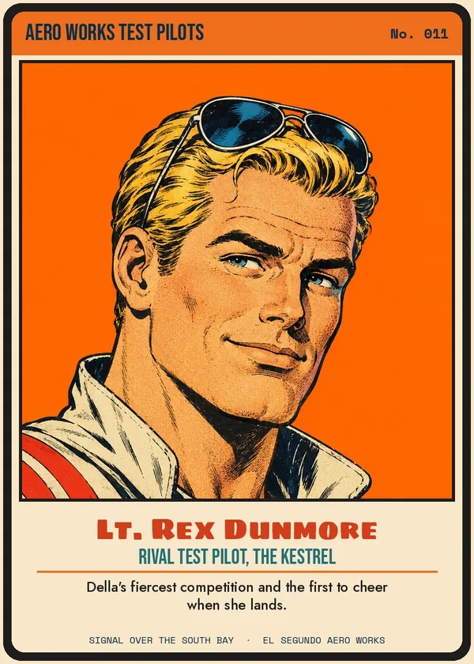
Rex flies the Kestrel, the Aero Works' other experimental ship, and wants the altitude record back. He's cocky in the ready room and generous on the radio. He'll race Della to the Lantern any day of the week.
“Second place is a long way down, Marsh.”
Lantern Station Crew
The crew of the broadcast station in the sky. They send the morning edition at 6:45, on the dot.
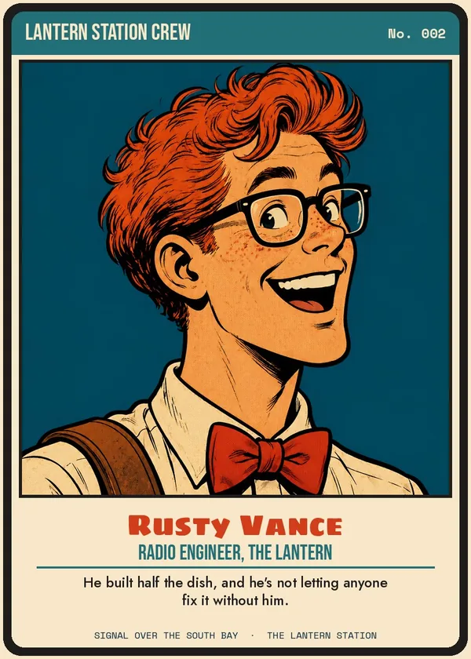
Rusty keeps the Lantern's transmitters humming and knows every bolt on the big dish by name. He talks fast, counts degrees out loud, and has never once lost his bow tie in zero gravity. He'd rather solder than sleep.
“Two degrees... one... MARK!”
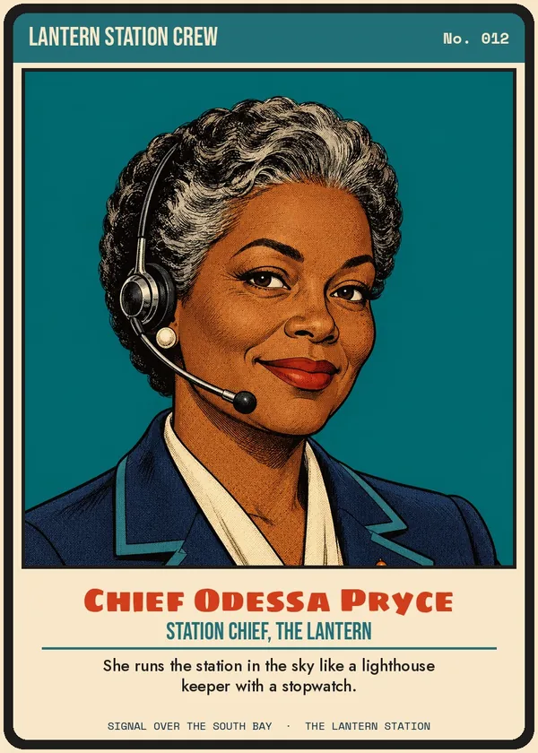
Odessa has commanded the Lantern since it first lit up over the bay. She checks the 6:45 broadcast clock three times every morning. Her calm voice on the radio has talked down more than one nervous shuttle pilot.
“Six forty-five, on the dot.”
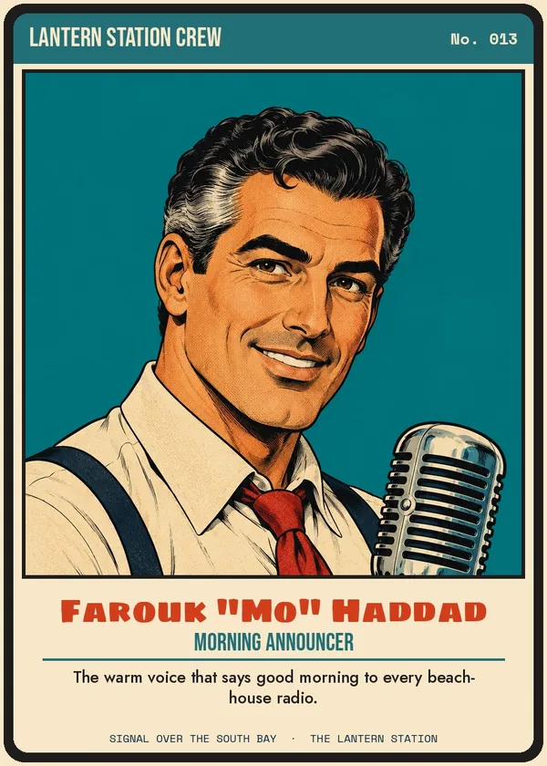
Mo reads the morning edition live from the Lantern's studio deck: weather, tides, swell and news. He practices his vowels while floating upside down. Half the South Bay sets its watch by his sign-on.
“Good morning, South Bay.”
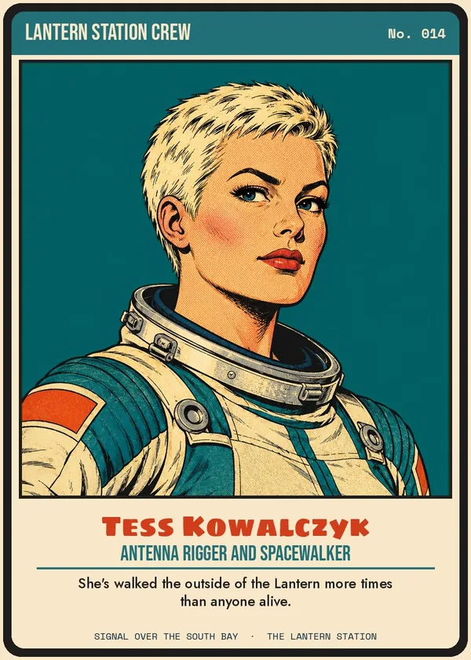
Tess handles the outside jobs: tightening mast guys, clearing frost off the dish, chasing loose bolts. She wears magnetic boots everywhere, even at the Main Street diner. Rusty trusts her torque wrench more than his own.
“Tethered and torqued.”
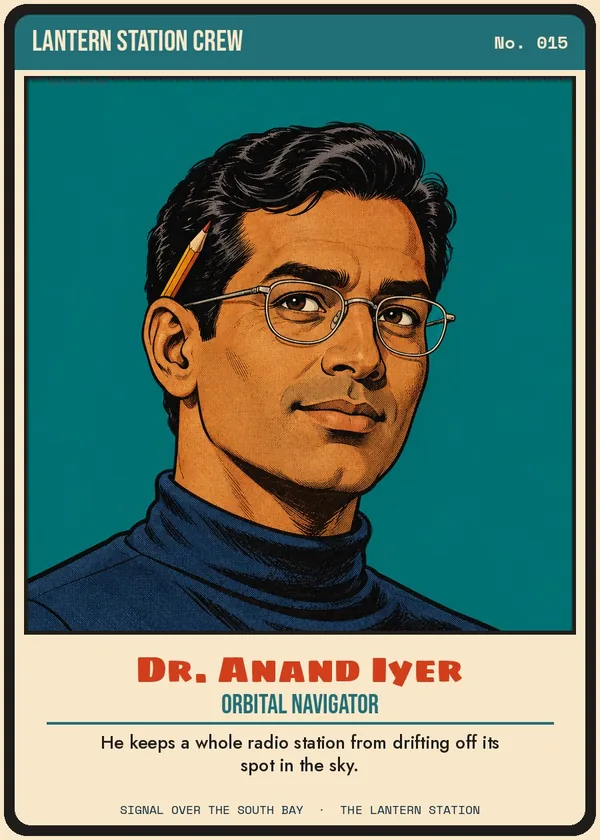
Anand runs the station-keeping thrusters and computes the Lantern's position every hour by hand and by machine. He plotted the meteor shower's path after the fact and hasn't forgiven himself. He's working on a warning system now.
“Hold station.”
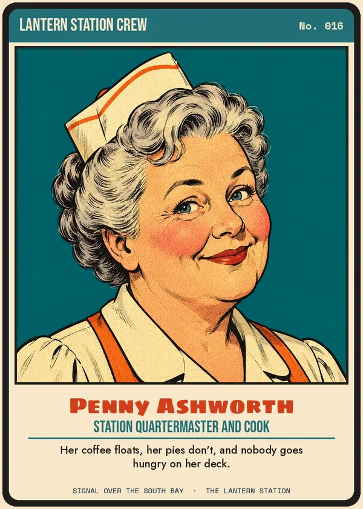
Penny keeps the Lantern stocked with everything from vacuum tubes to cinnamon rolls. She invented a lidded mug for zero gravity that the Aero Works now builds by the dozen. She knows everyone's birthday.
“Eat something, love.”
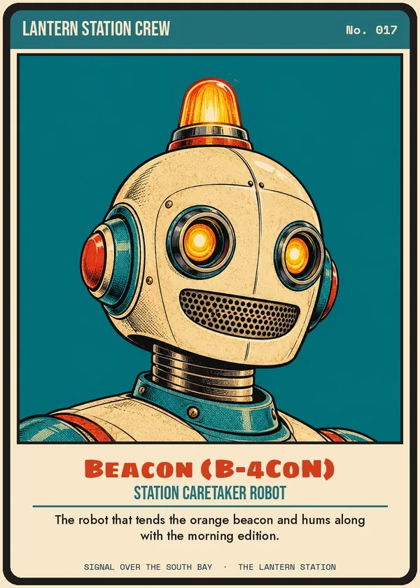
Beacon polishes the crown lamp, logs signal strength and patrols the ring corridors on soft rubber wheels. During the blackout it kept the beacon lamp warm with its own battery. It has a fondness for weather reports.
“Signal: nominal.”
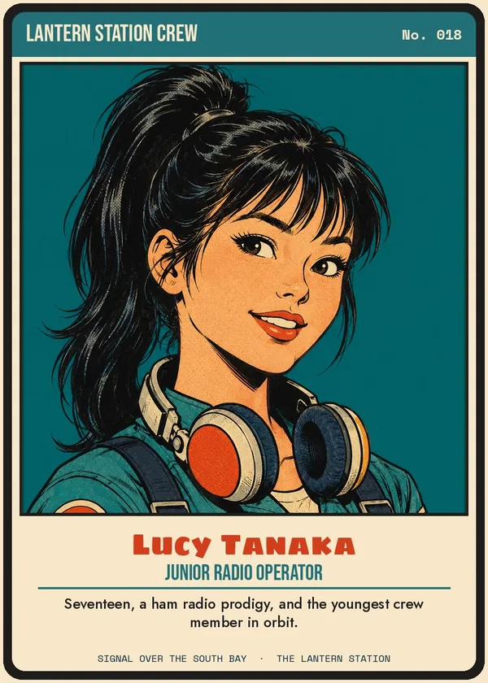
Lucy won a scholarship to the Lantern after building a receiver that picked up the station from her Gardena garage. She handles the overnight relay logs. She's teaching Beacon to tell jokes.
“I've got a faint one!”
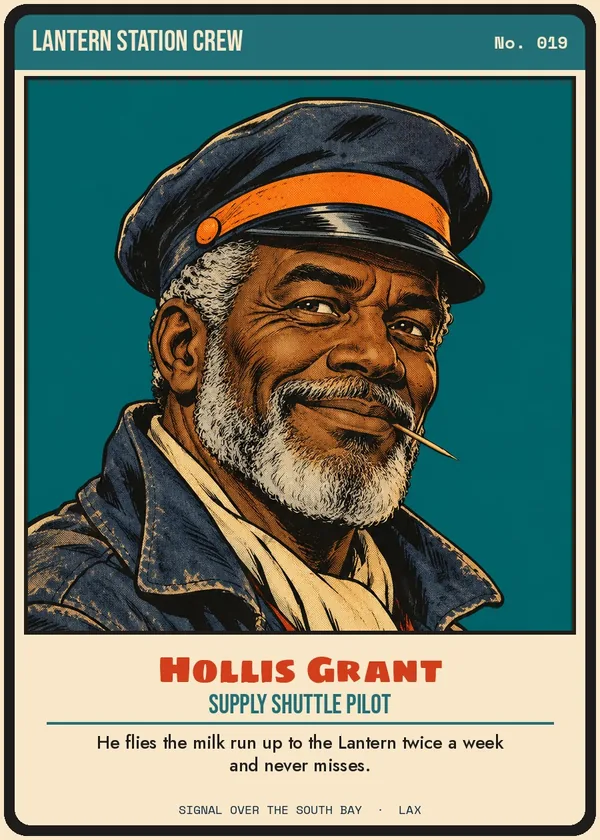
Hollis ferries mail, groceries and spare tubes from LAX to the station in an old cargo shuttle he calls Biscuit Tin. He's flown it so long he can dock by feel. He tells long stories and short jokes.
“Special delivery.”
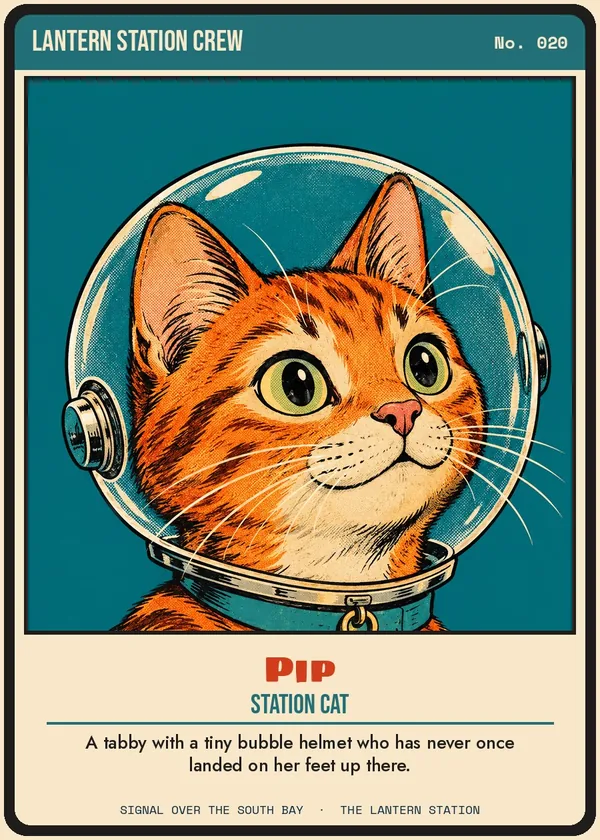
Pip stowed away in a mail sack and was promoted to official mouser on arrival. There are no mice, but she patrols anyway. She sleeps on the warm transmitter cabinet during the broadcast.
Beach Patrol
Lifeguards, surfers, skippers and swell-readers who keep the shoreline safe from Dockweiler to the Redondo breakwater.
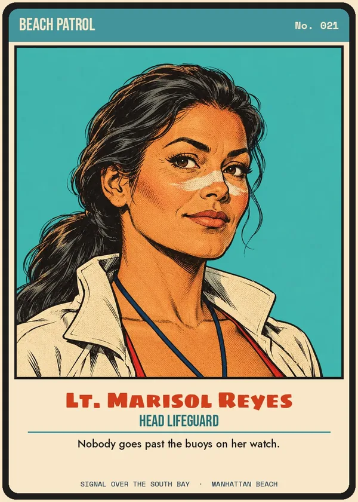
Marisol runs the Manhattan Beach towers and can read a rip current from a quarter mile. She listens to the Lantern's swell report before she unlocks a single tower. She's pulled two hundred swimmers out of the surf and remembers every name.
“Stay between the flags.”
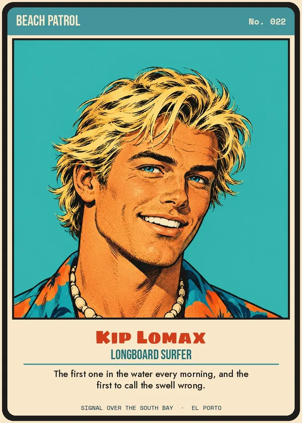
Kip waxes his board to the morning edition and argues with the swell report like it can hear him. He works afternoons at the Hermosa board shop. He's never on time for anything except a set wave.
“Two to three? Feels like four.”
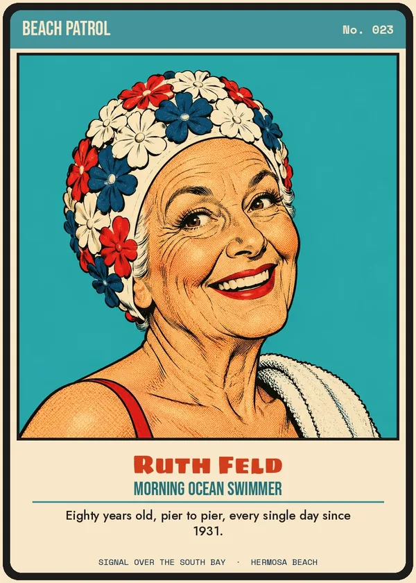
Ruth swims from the Hermosa pier to the Manhattan pier at sunrise and back by breakfast. The lifeguards set their clocks by her flowered swim cap. She has opinions about the water temperature and shares them.
“Brisk is good for you.”
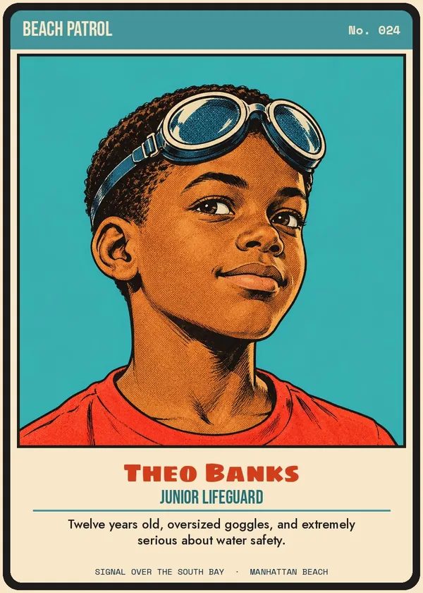
Theo is the youngest junior guard in the South Bay and carries his rescue can everywhere. He wants to be Marisol when he grows up, or maybe an astronaut. Possibly both.
“I've got it, Lieutenant!”
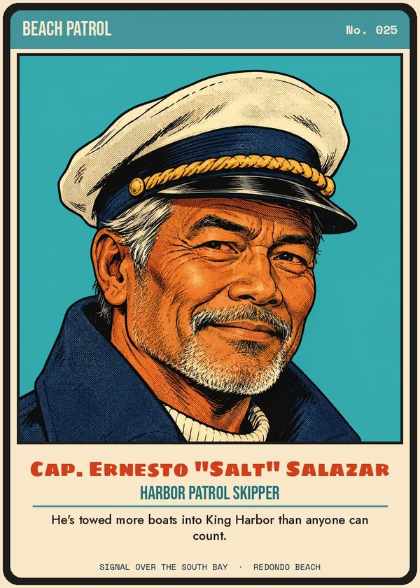
Salt captains the Redondo harbor patrol boat and knows every rock off Palos Verdes. He keeps a radio tuned to the Lantern in the wheelhouse for the tide times. He feeds the sea lions when he thinks nobody is watching.
“Tide waits for nobody.”
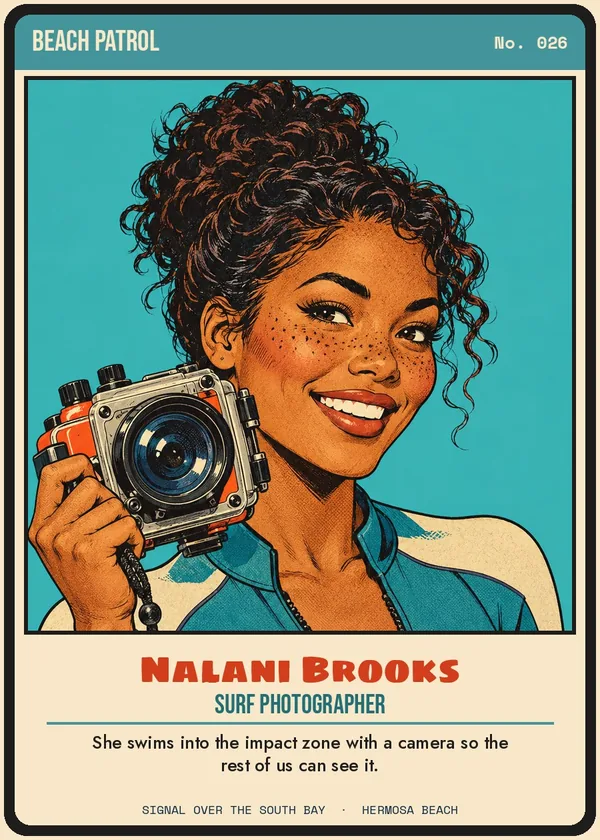
Nalani shoots the Hermosa lineup from inside the wave with a homemade waterproof housing. Her photos run on the morning edition's swell page every Saturday. She once photographed the Gull streaking over a closeout set.
“Hold that wave.”
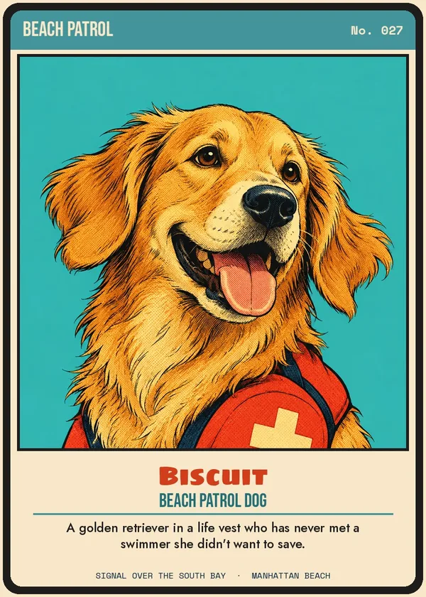
Biscuit rides in the patrol jeep and fetches rescue buoys before anyone throws them. She has three official commendations and one for stealing a hot dog. Every kid on the beach knows her name.
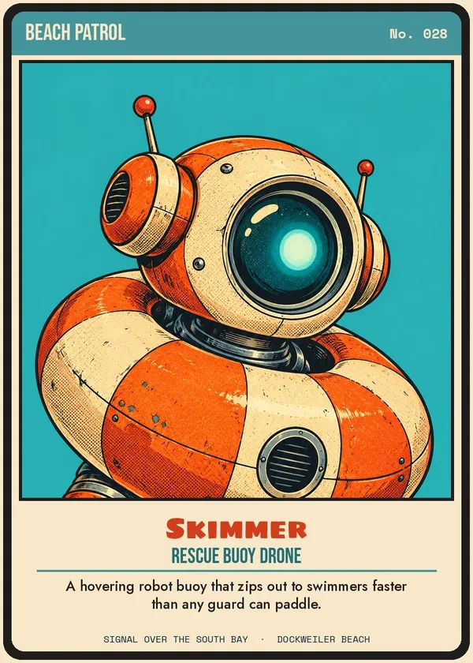
Skimmer was built at the Aero Works from a surplus jet nozzle and a lot of optimism. It hovers over the surf on a cushion of air and drops a float to anyone in trouble. It flashes orange when it's proud of itself.
“Float deployed!”
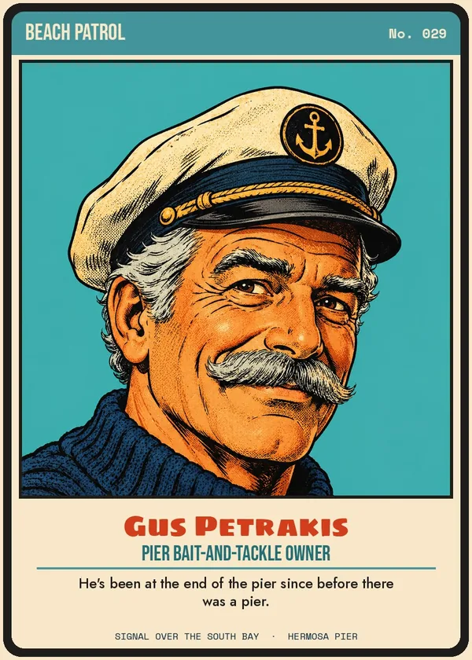
Gus sells bait, coffee and unsolicited fishing advice at the end of the Hermosa pier. He claims he saw the Lantern blink out before the Aero Works did. He might be right.
“They're biting at the end.”
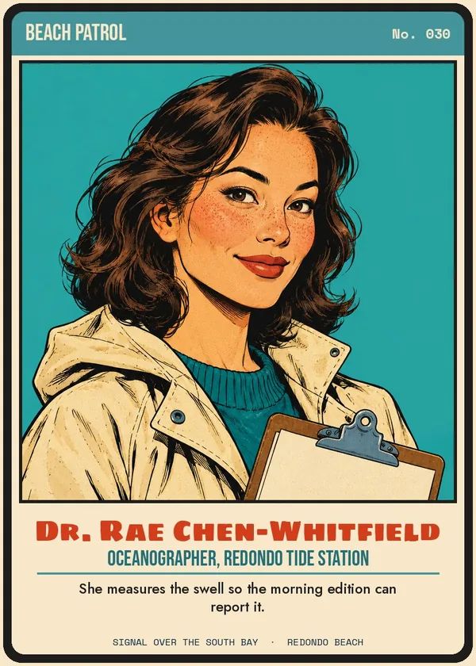
Rae runs the tide-and-swell gauges off the Redondo breakwater and phones the numbers to the newsroom at 5 A.M. sharp. She designed a buoy that radios wave height straight to the Lantern. She surfs to calibrate.
“Swell's building from the southwest.”
Main Street Regulars
The diner, the barbershop, the radio shop and the library: the people who hear the morning edition first.
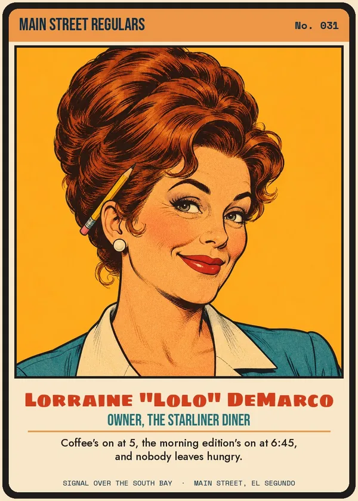
Lolo has run the Starliner Diner for twenty years and keeps the big radio behind the counter tuned to the Lantern. On the morning it went dark, she poured coffee for the whole Aero Works for free. She knows everybody's order and most of their secrets.
“What'll it be, hon?”
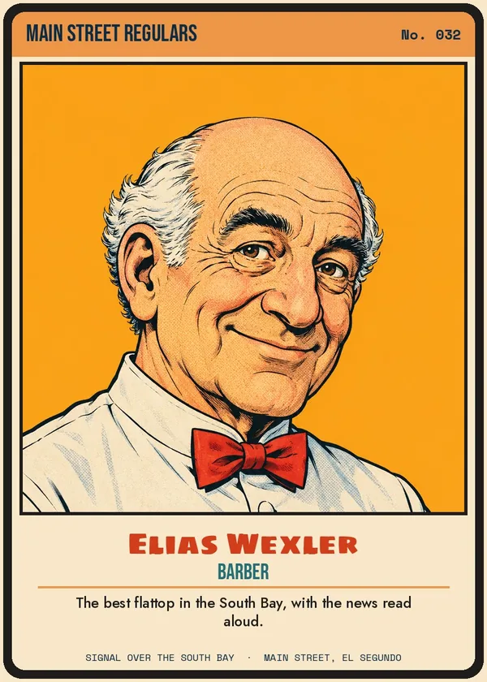
Elias has cut hair on Main Street since the first jet landed at LAX. He reads the morning edition aloud to customers who already heard it on the radio. He hands out lollipops and advice in equal measure.
“Next!”
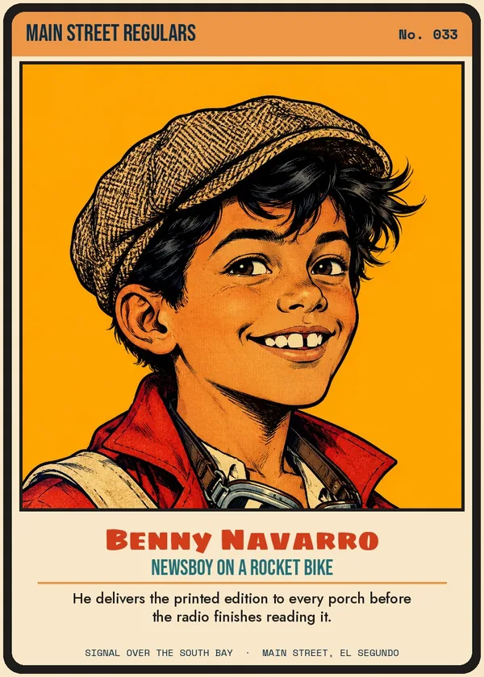
Benny bolted a surplus jet nozzle to his bike and is now the fastest paperboy in California. He throws papers with perfect aim and terrible handwriting on his route card. He'd like to fly the Gull, but he'll settle for the Kestrel.
“Extra! Extra!”
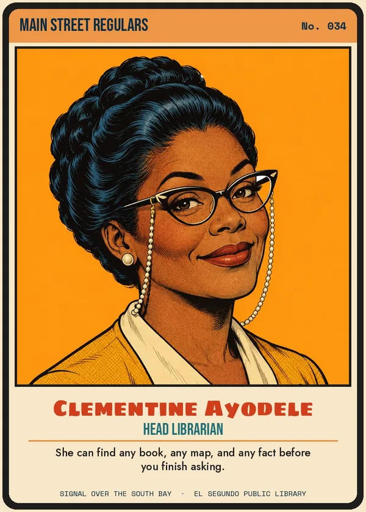
Clementine runs the El Segundo library and keeps a shelf of every morning edition ever printed. She found the old meteor-shower charts that helped the Skywatch crew. She shushes with great kindness.
“It's on page forty-two.”
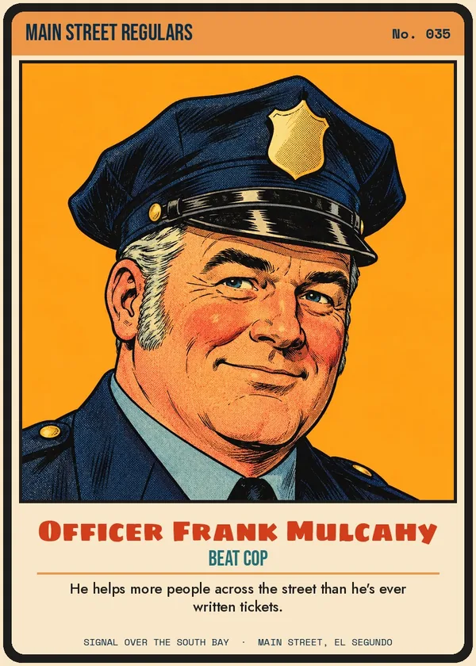
Frank walks the Main Street beat on foot and on a little blue scooter. His idea of a big case is a lost dog. He's the first to show up when anyone needs a hand.
“Everything all right here?”
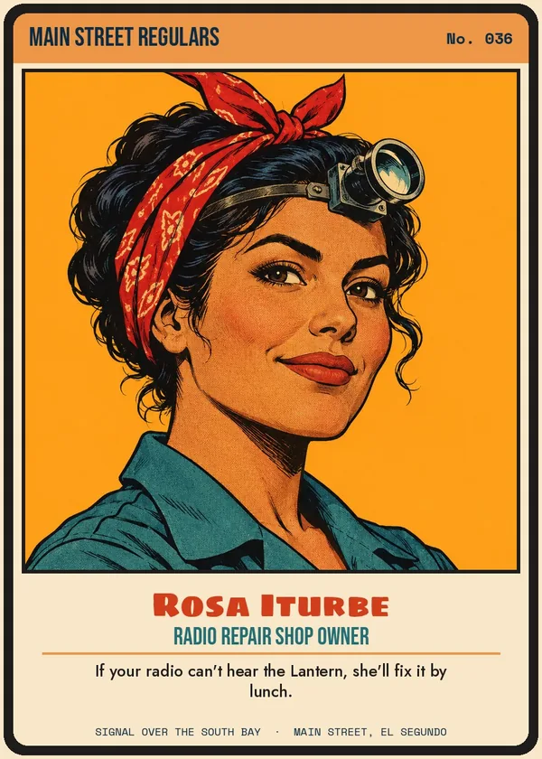
Rosa runs Iturbe Electric, the radio and TV repair shop next to the diner. During the blackout, she tested every set in town to prove the problem was in the sky. She and Rusty trade spare tubes and arguments.
“It's not your set.”
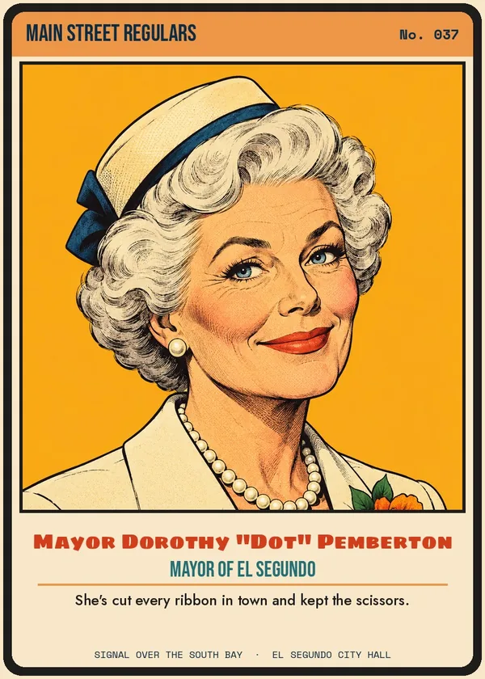
Dot has been mayor for three terms and knows every street by its potholes. She went on the radio after the blackout to tell everyone the paper would be on time. It was.
“This town builds tomorrow.”
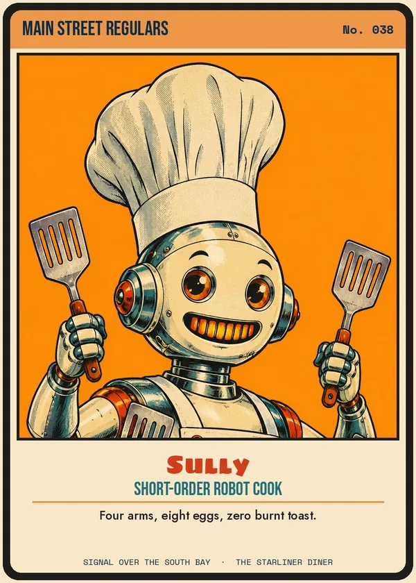
Sully cooks breakfast at the Starliner with four chrome arms and an internal clock synced to the Lantern. When the signal dropped, it served breakfast eight minutes early out of confusion. Nobody complained.
“Order up!”
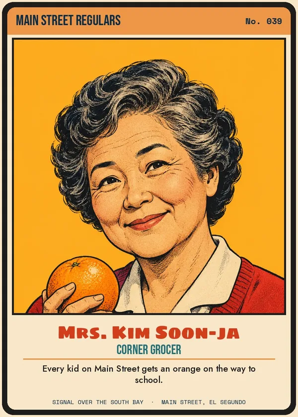
Mrs. Kim runs the corner market and keeps a ledger of who owes what that she never collects on. She listens to the morning edition while stacking oranges in perfect pyramids. She trusts the Lantern's weather more than her knee.
“Take one for the road.”
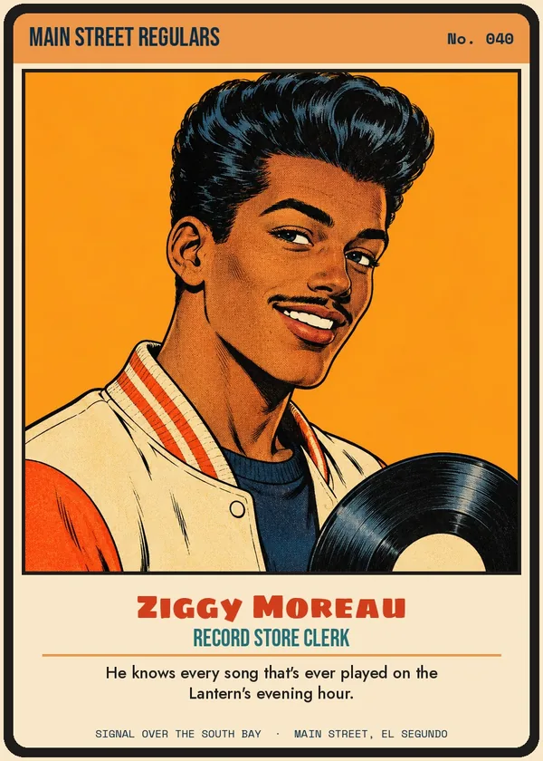
Ziggy works the counter at Platter Planet and DJs the high school dances. He keeps a notebook of every song the Lantern plays and calls in requests from the phone booth outside. He's sure he'll be on the air someday.
“Spin it again.”
Rec Park Paddle League
Sunrise paddle players at Rec Park. The ladder starts at 6:45, right after the forecast.
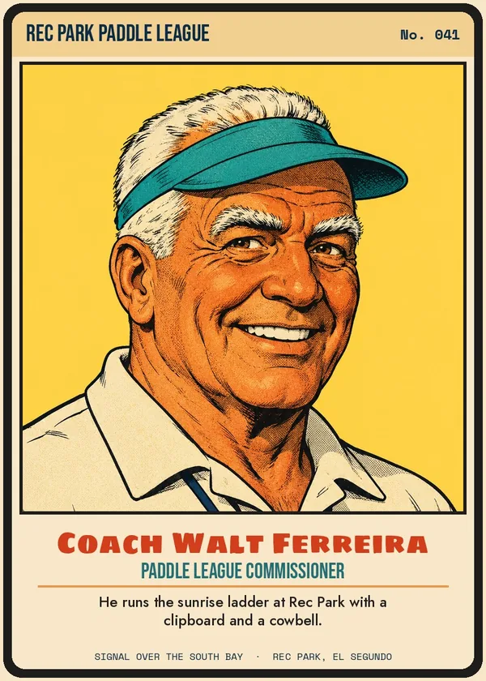
Walt founded the Rec Park paddle league and has posted every result on the bulletin board since. He starts the ladder the second the morning edition signs off. He takes rule disputes very seriously and pickles very lightly.
“Courts are open!”
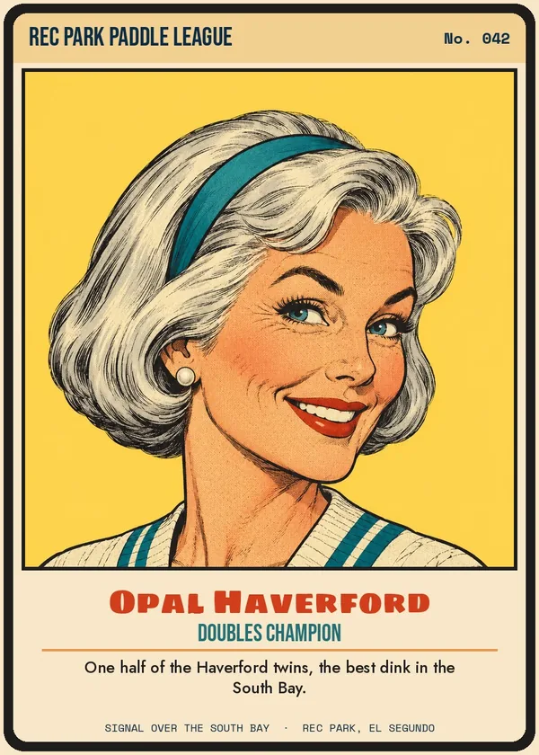
Opal and her twin Pearl haven't lost a doubles match since the Gull's first flight. Opal plays the left side and talks the whole time. She bakes lemon bars for anyone who takes a game off them.
“Soft hands win.”
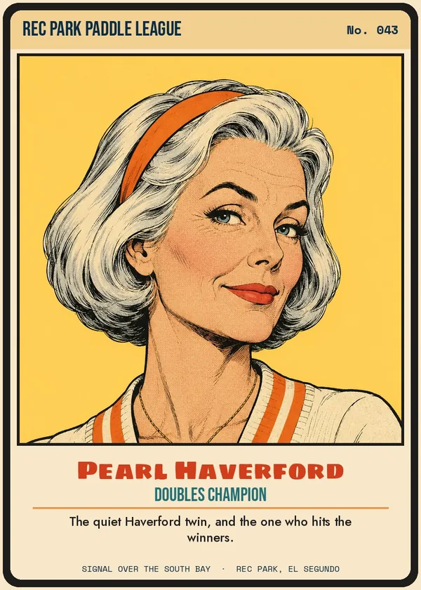
Pearl plays the right side and says perhaps four words a match. She keeps the twins' trophies polished and their record in a little red book. She'd like you to know Opal foot-faults.
“Out.”
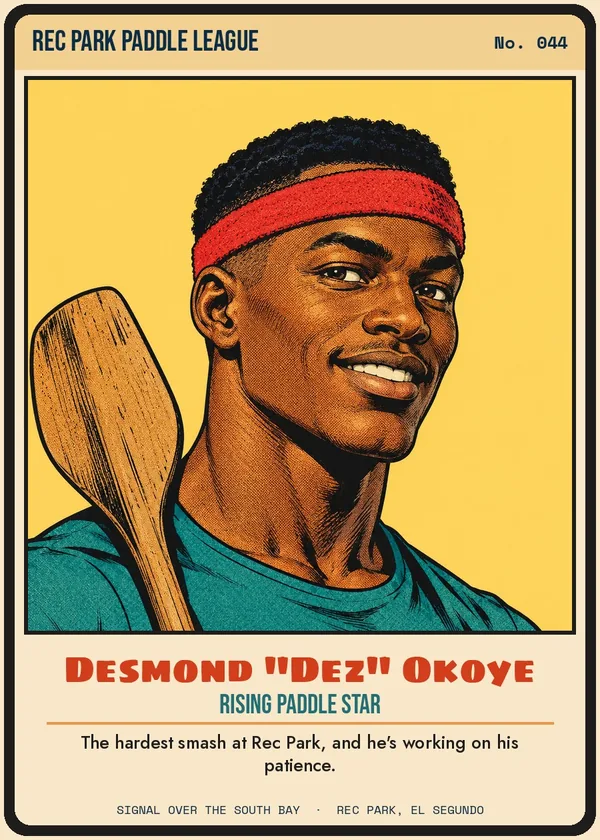
Dez works the morning shift at LAX and plays paddle before and after. He's climbed the ladder to the top three and wants a shot at the Haverfords. He counts down his serves like a launch.
“Three, two, one, serve.”
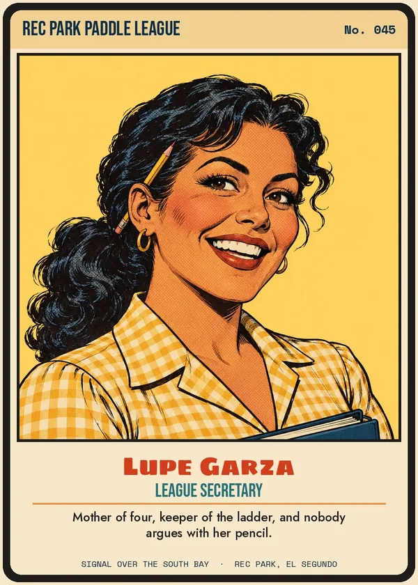
Lupe keeps the league's books, schedules and snack rotation in one battered binder. She plays a mean lob between school drop-offs. She's the reason the league has never once started late.
“You're on court two.”
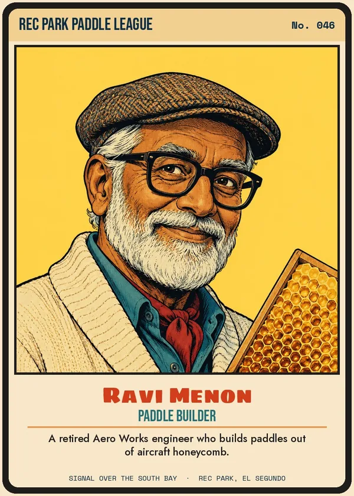
Ravi spent thirty years designing wing panels and now makes the lightest paddles in the league in his garage. Half the players use one. He insists on measuring everyone's swing first.
“Lighter is faster.”
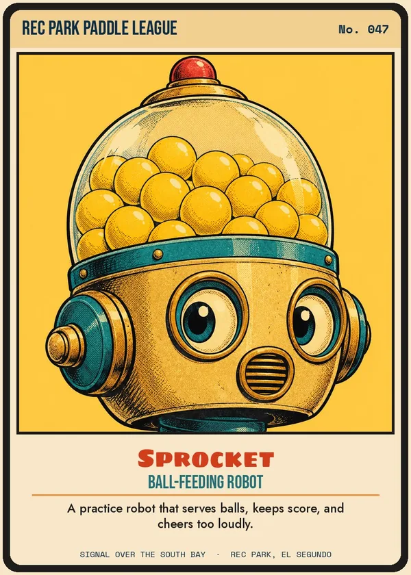
Sprocket was built from a surplus radar dish base and a gumball machine. It feeds practice balls at 6 A.M. and announces scores in a booming voice. It has a crush on the court-side scoreboard.
“Point! Point! Point!”
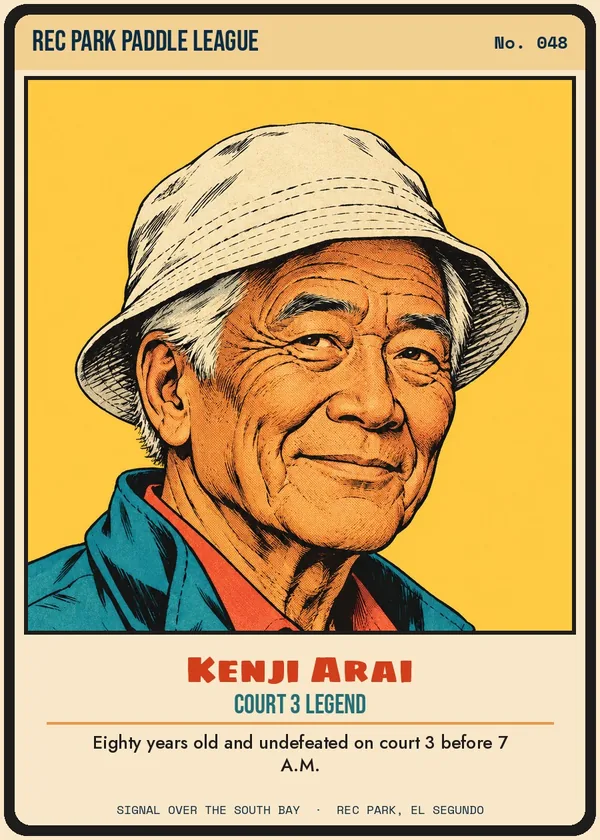
Kenji was gardening at Rec Park before it was a park and has played on court 3 every morning since it opened. He never runs and never loses. After the game, he waters the roses.
“Patience.”
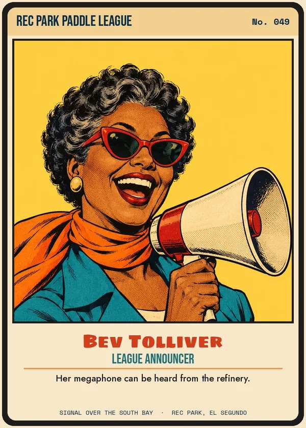
Bev calls every match at Rec Park from a lawn chair with a megaphone and a thermos. She does play-by-play like it's the Rose Bowl. She's applied to read sports on the Lantern four times.
“And it's a DINK!”
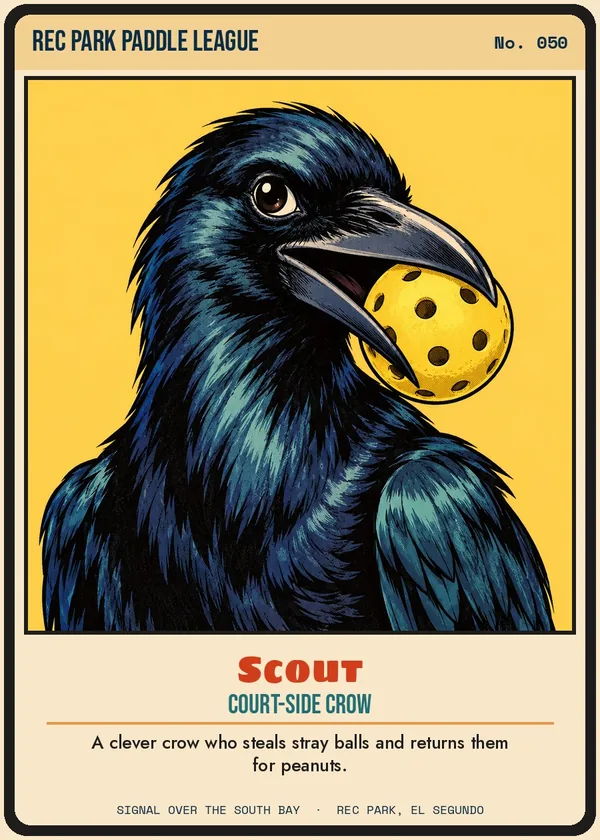
Scout has learned the league schedule better than most of the players. She steals any ball that rolls past the fence and trades it back for a peanut. Walt has made her an honorary ball girl.
Refinery Night Shift
The graveyard crew under the tank-farm lights. They hear the Lantern's signal before anyone else in town.
Lou knows every valve in the tank farm and walks the whole fence line before midnight. He keeps a radio in his lunch pail for the Lantern's overnight music. When it went quiet, he was the second call the Aero Works got.
“Safe and steady, boys and girls.”
Valentina fixes pipes on the night shift and welds sculptures out of scrap on weekends. One of them stands outside the Aero Works. She'd love to weld something in orbit.
“Hand me the torch.”
Obi tests samples through the night and writes poetry on the back of lab forms. He helped Rusty design a heat shield coating for the dish. He's gentle, precise, and always humming.
“Let's measure it twice.”
Earl keeps the refinery gate with a flashlight, a thermos and a transistor radio. He noticed the beacon go dark and called the Aero Works himself, only to find the line busy. He is still telling people about it.
“All quiet at the gate.”
Flare checks the tops of the tanks and stacks with a searchlight eye and long telescoping legs. It's shy around people and chatty with gulls. It reports its findings in tidy little beeps.
“All gauges green.”
Sunny runs the big crane on the night shift and hums along to the Lantern while she works. She has the steadiest hands on the coast. She lifted the spare dish segment onto the Gull's cargo sled in four minutes flat.
“Easy does it.”
Ida Mae drives the canteen truck from tank farm to gatehouse every night. She feeds the refinery crew, the Aero Works night line and anyone who looks hungry. She keeps the radio up loud.
“Biscuits are hot!”
Jasper runs safety drills and checks every hard hat before a shift starts. He's strict about rules and soft about people. He knows the evacuation route for every building in El Segundo by heart.
“Hard hats on!”
Gigi reads tank levels at the top of the ladders and waves at the beacon every night. She swears it waves back. She sings the overnight songs in French.
“Bonsoir, Lantern.”
Ratchet showed up during a night shift and refused to leave. The crew made him a tiny hard hat. He plays dead whenever the safety drill siren goes off, which counts as compliance.
The Morning Edition Desk
The newsroom that writes the paper the Lantern sends: weather, tides, swell and news.
Gussie runs the newsroom with a red pencil and a stopwatch. She wired the morning edition to the Lantern at 6:38 every day for twenty years. During the blackout, she had the paper ready to go the second the signal returned.
“The paper is on time.”
Freddie was on the night desk when the Lantern went dark and wrote the whole story before sunrise. Gussie cut it in half and ran it on the front page. He carries three pencils in case two break.
“Can I get a quote?”
June writes the weather for the morning edition from a rooftop station full of barometers and wind cups. She's never been fooled by June gloom. She gets a little smug about it.
“Clearing by noon.”
Tito turns Rae's buoy numbers into two sentences every surfer reads. He's been wrong exactly twice and wrote a correction both times. He keeps a longboard behind the newsroom door.
“Surf's two to three feet.”
Hazel has run the newsroom's Linotype since before radio could reach the sky. She sets the paper for porch delivery while the Lantern reads it aloud. She catches every typo and keeps a jar of them.
“Not on my page.”
Lou shoots for the morning edition with a big press camera and a pocket full of bulbs. He got the picture of the Gull's contrail over the beach at dawn. He likes faces more than rockets.
“Hold still. Smile.”
Tilly prints the overnight wire stories on long rolls of paper and sorts them into piles for Gussie. She's built from an old teletype and a lot of Rusty's spare parts. She chimes when news is good.
“Ding! Bulletin!”
Archie edits the overnight copy and answers every phone call that comes in after dark. He took the Aero Works call at 4:14 A.M. and started a fresh pot of coffee. He's never once raised his voice.
“Keep it short.”
Paz writes the sports column, which means mostly paddle, surf contests and high school track. She gave the Haverford twins their nickname, the Dink Sisters. She's training for the next pier-to-pier swim.
“What a rally!”
Inkwell was hatched on the newsroom roof and trained by Hazel. She has never dropped a correction, though she once delivered a sandwich by mistake. She wears a tiny red message tube on her leg.
Skywatch Observatory
Astronomers and tinkerers on the Palos Verdes bluffs who watch the sky the Lantern lives in.
Celestine has run the Skywatch Observatory for fifteen years and maps the paths of everything that crosses the Lantern's orbit. After the blackout, she built a meteor alert line straight to the station. Her open nights are the most popular thing on the peninsula.
“Look up.”
Ignatius has been tracking meteor streams for sixty years and filed his warning in a journal nobody opened. He is too polite to say he told them so, and says it anyway. He's now Anand's favorite pen pal.
“I did mention it.”
Yuki runs the observatory's radio dish and catalogues every strange signal from the sky. She was the first to hear the Choir. She keeps a notebook of sounds no one else can hear.
“Did you hear that?”
Ezra designs rocket fuel in a shed behind the observatory and is the reason the Gull climbs as fast as it does. His experiments are famous on the peninsula for their noise. He is very careful, mostly.
“Stand back. Further.”
Amara works the overnight telescope shift and has discovered two comets and one runaway bolt. She wants to be the first astronomer on the Lantern. She's writing a thesis on micrometeor showers.
“There it is.”
Ingrid designs weather satellites that will one day send cloud pictures to the morning edition. She's patient, methodical and impossible to rush. She drinks her coffee black and cold.
“Measure, then launch.”
ORRERY calculates orbits for the observatory and, lately, for the Lantern. It speaks in a slow, polite voice and dims its lights when it's thinking. It's very proud of its brass planetary model.
“Calculating. Please hold.”
Rafael watches the seismographs in the observatory basement and walks the cliffs every morning. He reports quakes, landslides and tide pools to the morning edition. He has a rock collection in every pocket.
“The ground has something to say.”
Winnie has ground mirrors for fifty years and taught half the South Bay how to build a telescope. Her workshop smells of pitch and polish. She gives every new telescope a name.
“Polish, then patience.”
Kepler roosts in the dome rafters and has better night vision than any telescope. The staff swear he hoots at meteors before the instruments see them. He's never wrong.
Channel Static
Rival broadcasters, schemers and pranksters who'd love to see the Lantern stay dark. Most of them can be talked down.
Sterling runs Channel Static from a converted barge in international waters and sells airtime by the second. He'd love for the Lantern to stay dark long enough for listeners to switch. He's charming, petty, and a surprisingly good singer.
“Stay tuned to Static.”
Lydia built Static's transmitter from salvage and spite. She and Rusty went to the same trade school and haven't spoken since a science-fair dispute. She jams signals for Sterling, but she hates doing sloppy work.
“Rusty Vance builds it. I improve it.”
Morty writes Channel Static's jingles on a toy piano and sells them to anyone who'll pay. He's easily bribed with sandwiches. He secretly loves the morning edition.
“Ba-da-BING!”
Nobody knows who the Count really is, only that he plays the best records at 2 A.M. on any frequency he wants. He's a prankster, not a crook. Ziggy is his biggest fan.
“You're listening to the Count.”
Mack dives the Redondo submarine canyon for anything that falls from the sky and sells it to Static. He's gruff and a little crooked, but he once pulled Kip out of a rip. He doesn't talk about that.
“Finders keepers.”
Static was built by Lydia to jam the Lantern's broadcast, but it gets distracted by any good song. Its face shows snow when it's thinking and test patterns when it's happy. It's starting to like the morning edition.
“KSSSHHHHHHH.”
Cornelius was asked to leave Skywatch after an incident with a giant magnet. He now plans to capture meteors in orbit and sell them as souvenirs. His plans are clever, his execution is not.
“Science for sale.”
Barnaby sells real estate, used cars and dreams, and lately he's selling billboard space in orbit. He talks fast and signs everything in triplicate. Mayor Dot keeps a file on him.
“Have I got a deal for you.”
Nix is a radio whiz who takes jobs from Sterling just to prove they can. They've hijacked the pier PA twice and the high school bell once. Rusty thinks they could be the best engineer in town someday.
“Wasn't me.”
Agnes publishes the Evening Clarion and has been trying to scoop the morning edition for thirty years. She's sharp, ruthless, and has never been late with a paper herself. She and Gussie play bridge on Thursdays.
“News at noon, darling.”
Visitors from Orbit
Travelers, oddities and neighbors from high above the bay, drawn in by the morning edition's signal.
Quoril arrived in a teardrop ship just past the Lantern's orbit and asked politely for a copy of the paper. It speaks in a gentle chime and collects weather reports. It is very concerned about the swell.
“Greetings. Is the paper on time?”
Zibbo latched onto the Gull during the spacewalk and rode it all the way to El Segundo. It speaks only in beeps and loves the diner's pancakes. Benny is teaching it to throw papers.
“Zib! Zib!”
The Choir floats past the Lantern every few months and hums in harmony with its carrier signal. Yuki recorded its songs, and they sound like the morning edition played backward. It means no harm; it just loves music.
Ostra Vey has driven the comet route for three hundred years and stops at the Lantern for Penny's pie. She has four arms, a long beard of tentacles, and a laugh like thunder. She once towed the Gull out of a meteor stream.
“Keep it rolling.”
Lumen floats on the solar wind and glows brighter when the beacon is lit. When the Lantern went dark, it dimmed too. It can't speak, but it can make the whole sky shimmer.
MOTH-1 was launched in 1949 and lost track of. Somewhere along the way it started thinking. It now drifts near the Lantern, listening to the morning edition and trying to remember who built it.
“Who made me?”
Glorm came to Earth to study human culture and became fascinated by pickleball. He takes notes on every match with five pencils at once. He has very strong opinions about the kitchen line.
“Fascinating. Again, please.”
Asha runs the Moon's tiny relay base and was startled to receive the South Bay's weather at 4:30 A.M. She radioed the Aero Works to say the dish was pointed at her. She's been a devoted listener ever since.
“Tranquility copies.”
Ember was part of the shower that knocked the Lantern off its mark. It apologized in a flash of light and has stayed to help ever since. It now warns Anand whenever its cousins are coming.
“Sorry, sorry, sorry.”
Vrill collects shiny things from across the galaxy and has his eye on the orange beacon. He offers fair trades and then unfair ones. Odessa has told him no forty-three times.
“Everything has a price.”